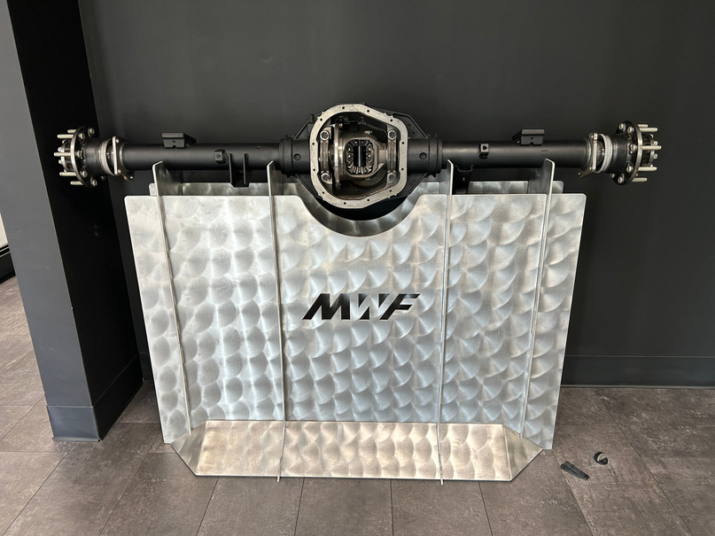

SERVICE TIME / BEFORE → AFTER
Previous16h
Redesigned4h
Same service task. Less downtime.−75%
Bar-shear die-box redesign
Redesigned a die-box assembly to address recurring bolt shear failures and improve serviceability.
Mid-West Forge
Mechanical engineer combining design, hands-on manufacturing, and troubleshooting to improve how equipment is built, assembled, and maintained.


From equipment redesign to model-to-test comparison. Each project explains the problem, my contribution, and the outcome.
Redesigned a die-box assembly to address recurring bolt shear failures and improve serviceability.
Developed a chain-drive system to replace the previous prop-shaft arrangement, reducing weight and assembly time.
 Earlier simulation
Earlier simulationBuilt a data-acquisition system to compare real drivetrain behavior with a CVT simulation.
Combined PLC logic tracing, electrical diagnosis, and robot maintenance to investigate production equipment faults.
 Hardware photograph
Hardware photographDeveloped a custom damping arrangement for a dust-collector hopper winch experiencing wire-rope failures.
Recreating a gauging screen in EZTouch 2.5 to move away from a legacy HMI.
 CAD rendering
CAD renderingDesigned and analyzed a cage-less open differential for a four-wheel-drive ATV.
CAD assemblyDesigned and fabricated an interlocking sheet-metal stand to display an assembled differential and axles.
 CAD rendering
CAD renderingUsed robot stacking patterns to develop a partitioned metal pallet for axle handling.
My work connects mechanical design with the practical demands of production. At Mid-West Forge, I work on equipment redesign, rebuilds, and mechanical, electrical, and controls troubleshooting. Earlier drivetrain projects developed my experience in CAD, simulation, fabrication, instrumentation, and testing. I bring those perspectives together when diagnosing a fault or developing a design that needs to work on the shop floor.
I’m interested in Mechanical Design, Manufacturing, and Test / Validation Engineering opportunities where design decisions connect directly to physical equipment and measurable behavior.
Download my résuméEquipment redesign and rebuilds, manufacturing troubleshooting, engineering drawings, and cross-functional implementation.
Mechanical equipment improvements, root-cause investigation, CAD, and fabrication.
Drivetrain design, simulation, fabrication, data acquisition, testing, and technical coordination.
Maintenance workshop experience with pumps, valves, compressors, and mechanical failure analysis.
I’d welcome a conversation about the role and the engineering problems your team is working on.